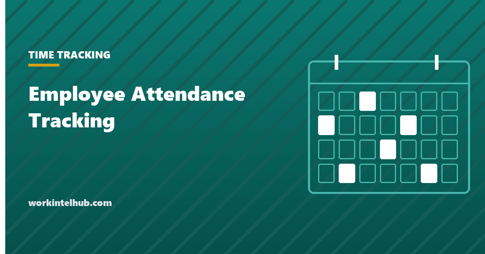

Employee Attendance Tracking

Attendance tracking is straightforward to set up and easy to get legally wrong. The mechanics take an afternoon. The part that causes trouble is what happens to the numbers afterwards, and specifically the point systems that treat every absence the same.
This page covers what to record, where the ADA and FMLA cut across a no-fault policy, and which patterns in the data are worth acting on.
What to record
Less than most systems capture. Six fields answer every question anyone actually asks.
| Field | Why |
|---|---|
| Date and scheduled shift | Absence only means something against a schedule |
| Actual start and end | Separates lateness from absence |
| Category | Sick, approved leave, unplanned, late, no-show |
| Whether notice was given | The distinction that matters operationally |
| Protected leave flag | Set by HR, not by the manager |
| Who recorded it | Because these records get disputed |
Note what is not there: the reason. Recording a diagnosis, a family situation or anything medical in an attendance system creates an obligation to protect it and a discrimination question you did not need. The category and the protected flag carry all the operational information without any of that.
The notice field is the one people skip and then wish they had. An absence with notice and an absence without notice are different events with different consequences, and a system that cannot tell them apart forces managers to keep the distinction in their heads.
Where point systems go wrong
A no-fault attendance policy assigns points per occurrence and triggers discipline at a threshold, regardless of the reason. Its appeal is consistency: nobody has to judge whose excuse is better. That is also exactly where it fails.
The EEOC enforcement guidance on reasonable accommodation is direct on this. An employer must modify a no-fault attendance or maximum leave policy as a reasonable accommodation where an employee with a disability needs additional leave, unless another effective accommodation exists or the modification would be an undue hardship. A policy applied uniformly is not a defence; uniform application is the mechanism of the violation.
FMLA-protected absence cannot be counted at all. Assigning points for FMLA leave and then disciplining on the total is a straightforward interference claim, and it is a common way an otherwise reasonable policy becomes a liability.
The practical consequence is a required exception path. If the system has no way for an absence to be marked protected and excluded from the count, it will eventually produce a disciplinary decision built on absences the law says you may not count.
Designing one that survives contact
Five rules, all of which are about what the count excludes rather than how it accumulates.
- Protected leave never enters the total. FMLA, ADA accommodation, jury duty, military leave, and state sick leave where it is protected. Flag at intake, not at the disciplinary review.
- HR sets the flag, not the line manager. Managers should not be deciding what is protected, both because it is a legal judgement and because it puts them in possession of medical information.
- Points expire. A rolling twelve months is standard. Without expiry, a long-tenured employee accumulates a permanent record of an unremarkable year.
- There is a documented exception route. One that a person can invoke, in writing, and that has a named owner.
- Thresholds trigger a conversation before a consequence. The first threshold should produce a discussion, because most attendance patterns have a cause that a conversation can address and a point total cannot.
A system with those five is doing what the count was supposed to do in the first place: surfacing situations that need attention, rather than automating a decision nobody has looked at.
Attendance policy wording you can copy
The policy is shorter than most drafts of it. Everything below is operative; anything longer tends to be reassurance, and reassurance is what makes a policy ambiguous.
Scheduled hours. Your schedule is set by %s and shared at least %s in advance. If it changes, you will be told before the change takes effect.
Notice of absence. If you cannot work a scheduled shift, tell %s as early as you reasonably can, and by %s at the latest. You do not need to give a reason.
What we record. The date, your scheduled shift, when you actually started and finished, whether notice was given, and a category. We do not record why you were absent, and you are not asked to provide medical information to your manager.
Protected absence. Leave protected by law, including FMLA leave, leave taken as a disability accommodation, jury service and military service, is not counted toward any attendance total. Contact %s to have an absence recorded as protected.
When we will talk to you. If unplanned absence reaches %s in a rolling twelve months, your manager will arrange a conversation. The purpose is to find out whether something can be changed. Records older than twelve months are not counted.
Asking for an adjustment. If your schedule is not working, ask %s. Asking has no effect on your standing.
Two lines carry most of the weight. "You do not need to give a reason" prevents managers collecting medical information they should not hold. "The purpose is to find out whether something can be changed" makes the threshold a trigger for a conversation rather than for a consequence, which is what keeps the policy out of trouble.
The patterns worth looking at
A running total is the least informative view of attendance data. Four patterns tell you more, and each points at a different cause.
| Pattern | Usually means | Response |
|---|---|---|
| Clustered on particular weekdays | A recurring commitment or a shift people cannot make | Ask about the schedule |
| Concentrated in one team | A management or workload problem, not an individual one | Look at the team, not the list |
| Rising lateness without absence | Commute, caring responsibility, or a start time that no longer fits | Flexibility usually fixes it outright |
| Sudden change for one person | Something has happened | A conversation, promptly |
The team concentration is the one most often misread. When absence clusters under one manager, the individual records look like a series of unrelated personal problems, and a point system will process them that way to its logical conclusion. Gallup reported in 2026 that global engagement fell for a second consecutive year, with the sharpest decline among managers, which is worth holding in mind before reading a team's attendance as a set of individual failures.
Attendance data is employment data
Two habits keep this clean. Record the category rather than the reason, and keep whatever medical information you do receive separate from the attendance record and the personnel file.
The second is an ADA requirement rather than good practice: medical information must be kept in separate confidential files. In practice the failure is rarely a filing decision. It is a note in a comment field, written by a manager trying to be helpful, that puts a diagnosis in a system forty people can read.
Attendance is also a record you must keep for your own protection. 29 CFR 516.2 requires hours worked each workday and each workweek, and an attendance record is often the evidence that supports it when a pay dispute arrives. Our timesheet template covers the hours side and what has to be retained.
Key takeaways
- Record the category and whether notice was given. Never record the reason or anything medical.
- The EEOC requires no-fault attendance and maximum leave policies to be modified as an ADA accommodation absent undue hardship.
- Uniform application is not a defence for a point system. It is the mechanism of the violation.
- FMLA-protected absence cannot be counted at all, and counting it is a straightforward interference claim.
- HR sets the protected flag, not the line manager, who should not be holding medical information.
- Points must expire on a rolling window, or long-tenured staff carry a permanent record of one bad year.
- Write "you do not need to give a reason" into the policy. It is what stops managers holding medical information.
- When absence clusters under one manager it is a team problem, and a point system will process it as a series of individual failures.
Frequently asked questions
What should an employee attendance tracking system record?
The date and scheduled shift, actual start and end, a category such as sick or unplanned, whether notice was given, a protected leave flag set by HR, and who recorded the entry. It should not record the reason for an absence, because that puts medical and family information into a system that is not built to protect it.
Are no-fault attendance point systems legal?
They are lawful in principle but must have exceptions. The EEOC's guidance requires employers to modify no-fault attendance and maximum leave policies as a reasonable accommodation where an employee with a disability needs additional leave, unless another effective accommodation exists or it would be an undue hardship.
Can I give attendance points for FMLA leave?
No. FMLA-protected absence cannot be counted toward an attendance total, and disciplining on a total that includes it is an interference claim. The system needs a way to mark an absence protected and exclude it from the count before the threshold is calculated.
How long should attendance points stay on record?
A rolling twelve months is the common standard. Without expiry, points accumulate permanently and a long-serving employee ends up carrying the record of a single difficult year indefinitely, which is neither fair nor useful as a signal.
Should managers be told why an employee was absent?
They need to know the person is absent and whether notice was given. They do not need the reason, and receiving medical information creates obligations they are not trained for. Route anything medical to HR, which sets the protected flag without passing the detail on.
What attendance patterns actually matter?
Absence clustered on particular weekdays, absence concentrated in one team, rising lateness without absence, and a sudden change for one person. Each points at a different cause, and none of them is visible in a running point total.
What should an attendance policy say?
Scheduled hours and how much notice of changes you give, how to report an absence, what is recorded, that protected leave is excluded from any total, the point at which a conversation happens and that its purpose is to find out what can change, and how to ask for an adjustment. Include the line that no reason is required, which is what keeps medical information away from managers.
Do I have to keep attendance records?
The FLSA requires records of hours worked each workday and workweek for non-exempt employees, and attendance records are usually the evidence that supports them. State law may impose additional requirements, and attendance records are frequently the deciding evidence in a pay dispute.